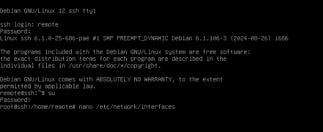
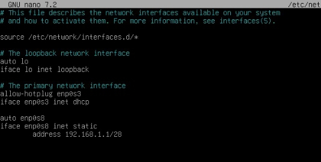
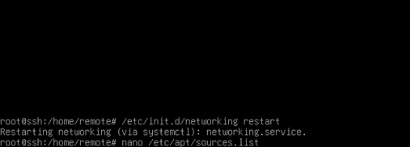
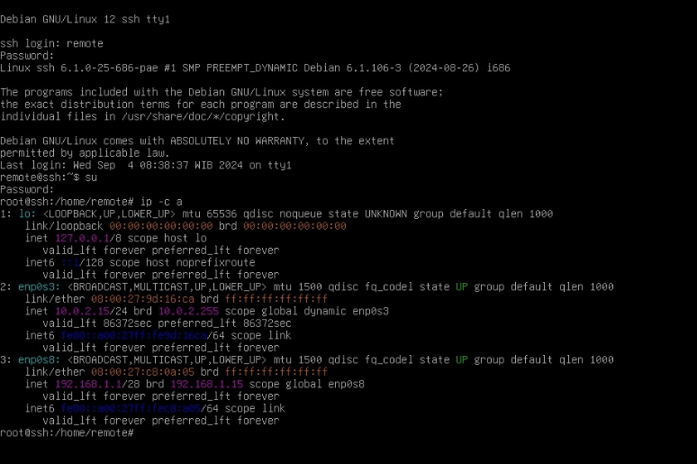
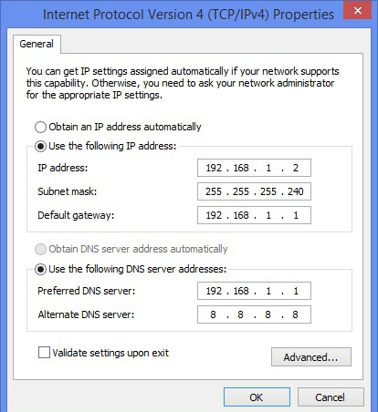

1. Masuk ke mode root dengan perintah “su”.
2. Setelah itu ketik perintah “nano /etc/network/interfaces”.

3. Lalu atur IP address dengan perintah sebagai berikut:
auto enp0s8
iface enp0s8 inet static
address 192.168.1.1/28

4. Kemudian simpan menggunakan CTRL + x dan y enter.
5. Setelah itu restart menggunakan perintah “/etc/init.d/networking restart”.

6. setelah di restart kita cek ip pada debian menggunakan perintah ip -c a atau ip a

7. Lalu hubungkan IP debian ke windows untuk mengecek apakah konfigurasi berhasil.
